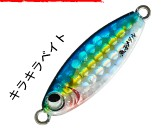
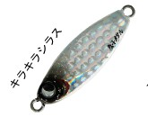
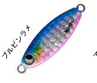
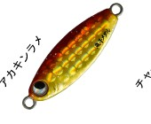

魚子メタル
魚子メタルはRUDIE'S（ルーディーズ）のスーパーライトスロージグです。
エステルラインや極細PEを使って、そのままキャストできるスーパーライトショアスロージギング専用モデルです。ジグヘッドでは届かない竿抜けエリアを狙え、シルエットも小さいので、今までバイトまで持ち込めなかったターゲットにも口を使わせられます。5.0・7.0・10gの追加で、ミドルゲームにも対応しました。

画像出典:RUDIE'S公式HP
スペック
- メーカー
- RUDIE'S（ルーディーズ）
- タイプ
- スーパーライトスロージグ
- 重さ
- 0.6g・0.8g・1.0g・1.5g・2.0g・3.0g・5.0g・7.0g・10g
- 入数
- 1個
- 付属品
- Wアシストフック
- カラー
- 全6色
- ターゲット
- アジ・メバル・カサゴ・サバ・メッキ・ソイ・カマス・超小型青物など
- 価格
- 0.6〜3.0g：620円／5.0〜10g：650円（税別）
▼今すぐチェック
魚子メタルの特徴
左右非対称ボディの超ヒラヒラフォールで、小魚を演出
-
左右非対称ボディの超ヒラヒラフォール
左右非対称のボディで、フォール中にヒラヒラと舞って小魚が思わず食いつく。
-
ジグヘッドでは届かない竿抜けを狙える
エステルラインや極細PEでそのままキャストでき、ジグヘッドでは届かない沖の竿抜けポイントまで探れる。
-
0.6gから10gまでの幅広いラインナップ
0.6〜3.0gのライトゲーム用に加え、5.0・7.0・10gを追加。シルエットが大きくなってアピールも上がり、堤防のミドルゲームにも対応する。
魚子メタルの使い方
キャストして狙いのレンジまで沈め、軽いリフト＆フォールでヒラヒラと落とす「スロー」な誘いが基本です。アタリはフォール中に出ることが多いので、ラインの変化に集中しましょう。
アジを狙う時は、表層から少しずつカウントを増やしてレンジを探ります。5.0g以上はより深く遠くを狙えるので、潮が速い時や沖の回遊魚狙いに。
魚子メタルの得意な状況
港内のアジング・メバリングで、ジグヘッドでは届かない沖を探りたい時が得意です。
重いサイズは、真鯛・ロックフィッシュ・フラットフィッシュ・青物などを堤防から手軽に狙う「ミドルゲーム」にも使えます。
ワンポイント
0.6〜3.0gはアジやメバルなどのライトゲーム、5.0〜10gは深場や遠投、ミドルゲーム向けと考えると選びやすいです。カラー「キンアジゴ」は0.6〜3.0gと5.0〜10gでデザインが異なります。
サイズの使い分け
| 重さ | 価格（税別） | 使い分け |
|---|---|---|
| 0.6g〜1.5g | 620円 | 港内のアジ・メバルを繊細に狙う時 |
| 2.0g〜3.0g | 620円 | 少し沖や深め、風がある時のライトゲーム |
| 5.0g〜10g | 650円 | 深場・遠投・ミドルゲーム（真鯛・青物など） |
※重さ・価格は公式ページより（使い分けは目安）。各サイズとも全6色、Wアシストフック付きです。
オススメカラー
魚子メタルは全6色。そのうち4色を紹介します。

キラキラベイトブルー系のベイトカラー。まず1つ選ぶならこの色。

キラキラシラスシラスを思わせるシルバー。小さなベイトを食べている時に。

ブルピンラメブルー×ピンクのアピール系。朝夕に。

アカキンラメ赤金の強めのアピール。濁りやローライトに。
画像出典:RUDIE'S公式HP
魚子メタルに似ているルアー
-
 シーライドミニ
ブルーブルー
詳細はこちら＞
シーライドミニ
ブルーブルー
詳細はこちら＞
ブルーブルーのマイクロジグ。ウルトラライトジギングでの持ち替え先に。
-
 メタルマル19
BREADEN
詳細はこちら＞
メタルマル19
BREADEN
詳細はこちら＞
ブレード付きのジグ。遠投して広く探りたい時に。
-
 魚子ラバ
RUDIE'S
詳細はこちら＞
魚子ラバ
RUDIE'S
詳細はこちら＞
同じ魚子シリーズのマイクロタイラバ。底で巻いて誘いたい時に。